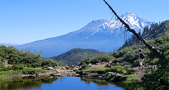
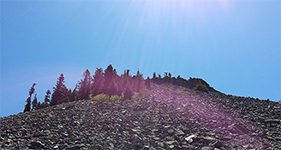

L'ascension planétaire vers la 5ème dimension — le Mont Shasta
La transformation énergétique planétaire et son passage en 5ème dimension et Rôle du MONT SHASTA, montagne sacrée de Californie et vortex 5D. Diaporama et témoignages concernant mes expériences personnelles par contacts éthériques et voyages astraux avec les Etres 5D de TELOS depuis 2003. Messages et description de leur rôle vis à vis de l'éveil de conscience de l'humanité.
Conférence & Diaporama : L'ASCENSION PLANÉTAIRE VERS LA 5ème DIMENSION – LE MONT SHASTA


Durant cette conférence je présenterai rapidement le contexte de changement actuel pour la planète :
- La transformation planétaire au niveau énergétique et le rappel de la période Atlantide/Lémurie - La résurgence et révélation de sagesses ancestrales dont la Lémurie avec les survivants, passés en 5ème dimension, qui vivent sous le Mont Shasta. Pourquoi ce courant d'énergie ? Qui sont ces Êtres multidimensionnels ? Que nous proposent-ils ? - Preuves concrètes : On trouve dans les librairies de Shasta city des ouvrages relatant de nombreux témoignages du siècle dernier (1934-1965-1973) concernant des rencontres physiques de chercheurs ou simples campeurs avec ces grands Êtres lumineux.
Je vous présenterai ensuite LE MONT SHASTA, montagne sacrée et vortex 5D située en Californie où je me rends souvent depuis 2004 et où je conduis des groupes depuis 2014 à partir d'un diaporama de photos personnelles ou de stagiaires. Terre amérindienne protégée, lieu mystique... Vous découvrirez des paysages de nature éthérée de toute beauté ainsi que des phénomènes surprenants. Ce lieu est un amplificateur énergétique de 5ème dimension permettant de déployer la conscience et de se reconnecter à notre nature Essentielle.
Je témoignerai enfin de mon expérience de contacts personnels avec ces Êtres depuis 2003 : visite de la cité de TELOS et description du vécu de ces Êtres à partir de voyages astraux, anecdotes personnelles (synchronicités, soins).....et rencontres diverses à Shasta.